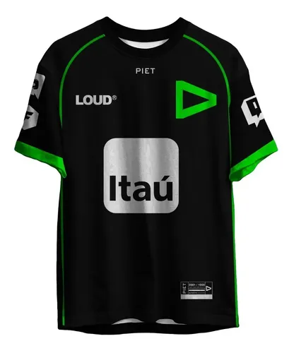
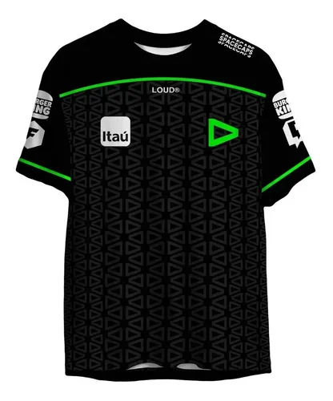
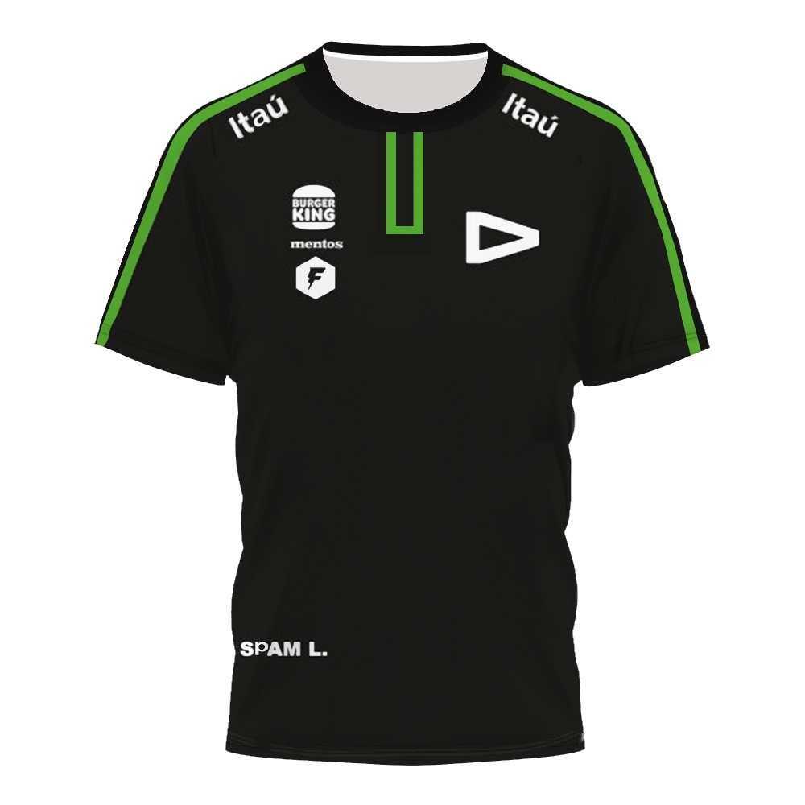
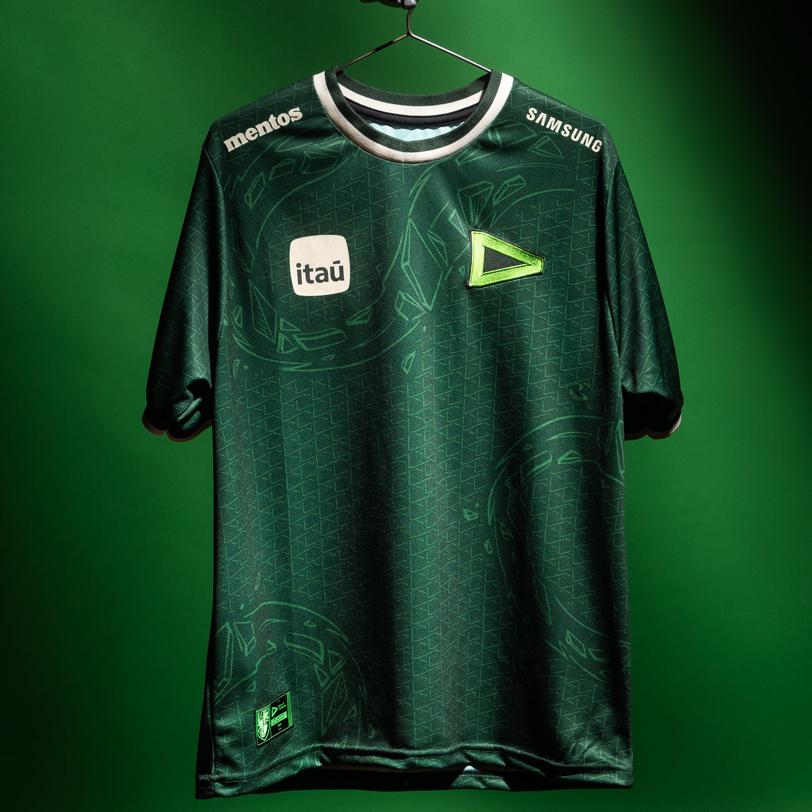
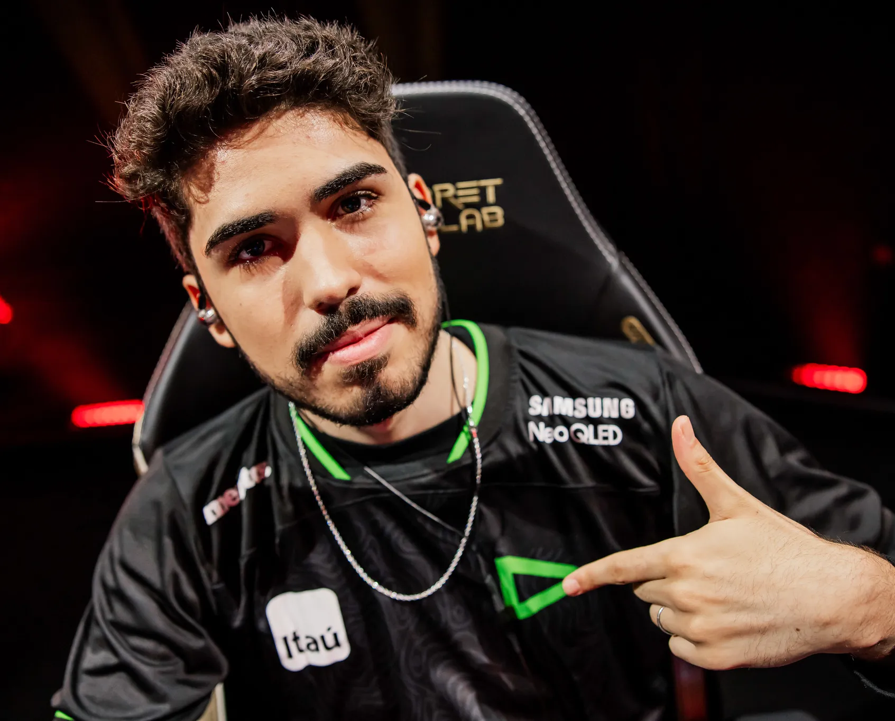
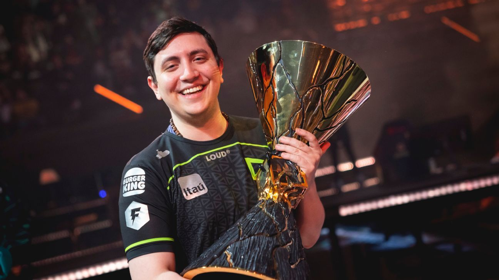
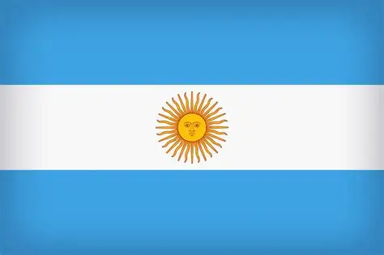
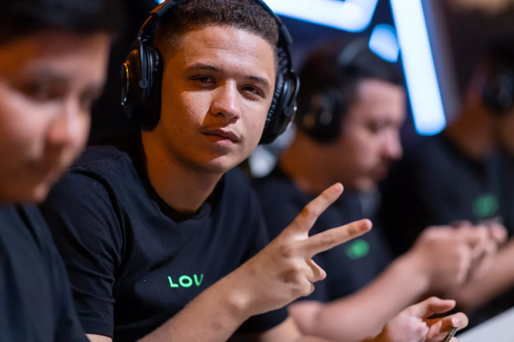
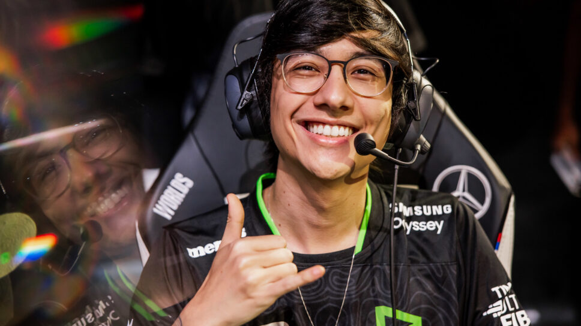

LOUD
Nascida para fazer barulho, a LOUD transformou o eSports em cultura e estilo de vida. Muito além dos troféus, somos uma potência global de conteúdo e competição, arrastando a maior torcida do planeta para dominar os palcos internacionais e cravar a bandeira do Brasil no topo do cenário mundial.
Jogos em destaque

Jerseys marcantes da LOUD
Ao longo dos anos, a LOUD construiu uma identidade visual forte, usando o verde como marca principal em competições, conteúdos e eventos.

2021
Início da identidade
Um dos primeiros uniformes da organização, marcado pelo verde forte e pelo visual simples que ajudou a consolidar a identidade da LOUD no cenário brasileiro.

2022
O ano do mundial de VALORANT
A jersey de 2022 ficou marcada pela conquista do VALORANT Champions, quando a LOUD colocou o Brasil no topo do cenário internacional.

2023
Expansão internacional
Com uma identidade mais moderna, a organização continuou sendo uma das maiores forças brasileiras em VALORANT, League of Legends e Free Fire.

2024
Visual mais agressivo
O uniforme trouxe detalhes mais fortes e modernos, mantendo o verde como elemento principal da LOUD e com o elemento Hidra.
Jogadores em destaque nos últimos anos

 Erick "Aspas" Santos
Erick "Aspas" Santos
Considerado um dos melhores jogadores de VALORANT do planeta. Era a máquina de abates (fragger) da LOUD, famoso por suas jogadas inacreditáveis de Jett que garantiram o título mundial de 2022.


Matias "Saadhak" DelipetroConhecido como "O Manito", foi o grande cérebro e líder dentro de jogo (IGL). É um dos maiores estrategistas da história do cenário e o pilar que manteve a LOUD no topo por anos.

Cauan "Cauan7" da Silva
Considerado um dos jogadores mais geniais e habilidosos da história do Free Fire mobile. Foi peça central de uma era de ouro da LOUD no jogo, conquistando títulos nacionais e se destacando mundialmente pela sua capacidade absurda de eliminação.

Thiago "Tinowns" Sartori
Considerado por muitos anos o melhor jogador de LoL em atividade no Brasil. Extremamente consistente, inteligente e decisivo, é o motorzinho que carregava o time taticamente nas costas.